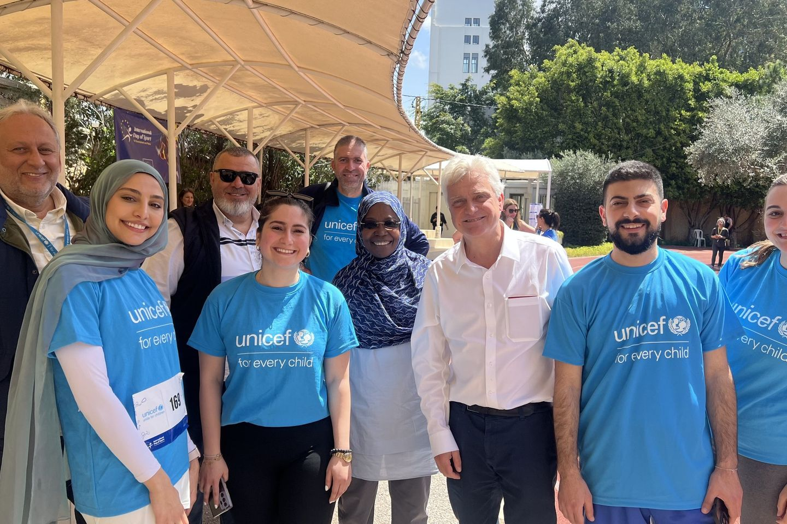

Public health & humanitarian work
Evidence into
implementation
8+ years across UN agencies, government, academia and humanitarian settings — turning data into insights, and insights into action.
I bring together public health, nutrition, data, research, and program experience to help organizations design, implement, monitor, and improve health programmes.
With 8+ years of experience across UN agencies, government, academia, and humanitarian settings, I have worked on projects spanning health and nutrition, primary healthcare, monitoring and evaluation, information management, research, community health, and emergency response.
My work sits at the intersection of evidence and implementation — turning data into insights, insights into action, and complex public health challenges into practical solutions.
- Master of Public Health
- Epidemiology & Biostatistics, AUB · 2019
- Organisations
- UNICEF · WFP · AUB · Ministry of Public Health
- Peer-reviewed
- BMJ Open · Public Health
- Based in
- Beirut, Lebanon — available remotely
Eight years, in the field
Areas of expertise
Five bodies of work that keep meeting each other in the field.
Programme design, primary healthcare, health systems strengthening, referral pathways, community health, and health service improvement.
Monitoring frameworks, indicators, logframes, programme evaluations, data quality, performance monitoring, and reporting.
Data management, dashboards, data visualization, information systems, data quality, analysis, and evidence-based decision-making.
Research design, literature reviews, qualitative and quantitative research, data analysis, systematic reviews, and evidence synthesis.
Emergency needs assessments, health and nutrition response, programme monitoring, accountability, beneficiary data management, and emergency information systems.
Developing training programmes, learning materials, workshops, and practical tools for public health professionals, community health workers, partners, and programme teams.
How I got here
I trained as a dietitian first. What I kept running into was the limit of the room: you can change what one person eats, but you can't change what a country eats one consultation at a time. So I went to AUB for a Master's in Public Health, specialising in Epidemiology and Biostatistics.
In 2018 I joined UNICEF as one of Lebanon's first Youth UN Volunteers — one of six selected nationally — on a global pilot focused on child survival, while still finishing the degree.
In 2019 I joined the World Food Programme in Lebanon as a Monitoring & Evaluation Associate, and spent two and a half years moving through different roles as the country moved through a compounding crisis.
From 2022 I consulted with UNICEF on information management — health, data and public health meeting in the same place. From 2023 I have consulted with Lebanon's Ministry of Public Health through AUB, working inside the national health system rather than beside it.
The through-line is the same one that runs through everything else I do: find out what is actually true, then make it usable by someone who has to act on Monday morning.
Lebanon · 2018 → today
Research & publications
Research interests
For organisations
Have a programme that needs a hand?
Short-term consultancies, evaluations, research support, information systems, training design — or a conversation about whether I'm the right person for it. Tell me what you're working on.